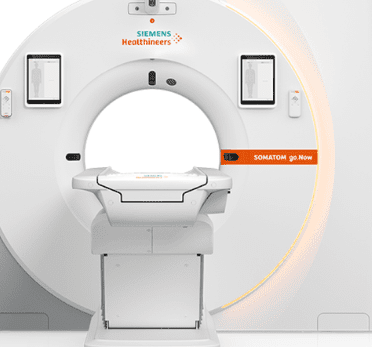
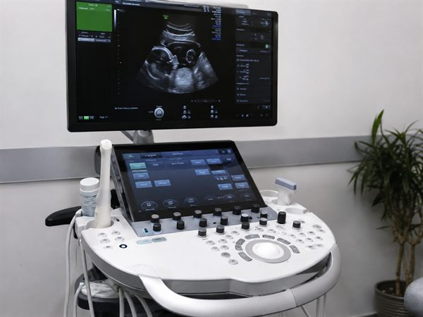
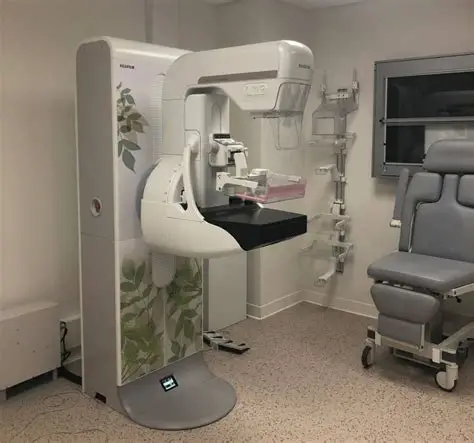
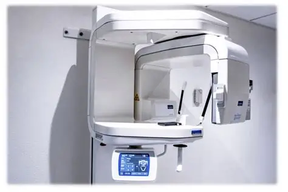
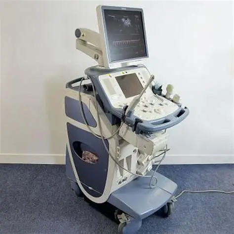
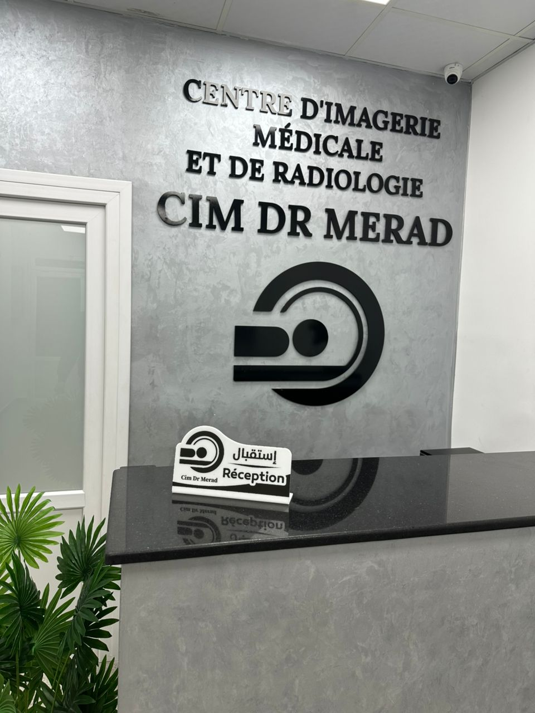
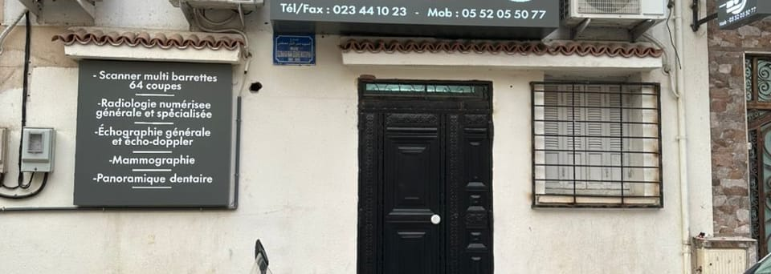

صحتكم أولويتنا
مركز الأشعة والتصوير الطبي – بئر توتة
خدماتنا الطبية

سكانير متعدد الشرائح 64 شريحة
تصوير عالي الدقة لتشخيص سريع ودقيق.
سكانير متعدد الشرائح (64 شريحة) من نوع Siemens مع إعادة بناء ثلاثي الأبعاد، لفحص الصدر والبطن والعظام والأوعية الدموية (سكانير الأوعية)، إضافة إلى فحوصات متخصصة مثل سكانير القولون وسكانير الأمعاء الدقيقة. فحص سريع، وقد يُطلب تحضير خاص (الصيام، الحقن) حسب المنطقة المفحوصة.

تصوير بالصدى العام ودوبلر
فحص الأعضاء والأوعية الدموية في الوقت الفعلي.
فحص بالصدى للبطن والحوض والغدة الدرقية والأنسجة الرخوة بجهاز Toshiba، إضافة إلى تصوير دوبلر للشرايين والأوردة. فحص غير مؤلم وبدون إشعاع، وقد يُنصح بالصيام لبعض فحوصات البطن.
الأشعة الرقمية العامة والمتخصصة
صور رقمية واضحة، متوفرة بسرعة لطبيبكم.
أشعة رقمية للعظام والصدر والجيوب الأنفية، إضافة إلى فحوصات متخصصة مثل تصوير الرحم والبوق، باستخدام جهاز Villa بكاشفات رقمية مسطحة من الجيل الجديد لصورة أوضح. نتائج رقمية تُسلَّم بسرعة لطبيبكم المعالج.

تصوير الثدي (ماموغرافيا)
الكشف المبكر وتشخيص أمراض الثدي بمعدات ملائمة.
الكشف المبكر وتشخيص أمراض الثدي باستخدام جهاز ماموغرافيا GE. بوصفة طبية أو ضمن الفحص الدوري، ويُفضَّل خارج فترة الدورة الشهرية.

بانوراما الأسنان
رؤية شاملة لبنية الأسنان والفكين والوجه.
صورة بانورامية بجهاز Villa، شاملة للأسنان والفكين والجيوب الأنفية ومفصل الفك الصدغي — مفيدة قبل علاج الأسنان أو التقويم أو الزرع.

الخزعة والبزل الموجّهان بالأشعة
أخذ العينات بتوجيه من التصوير الطبي، بكل أمان.
أخذ عينات وبزل موجّه بالصدى أو السكانير، يُجريه الدكتور مراد وفق شروط تعقيم صارمة، لتحليل العقيدات أو الكتل المشبوهة.
من نحن
يُدار مركز الأشعة والتصوير الطبي ببئر توتة من طرف الدكتور مراد، طبيب أشعة يمارس منذ 2015، ملتزم بتقديم رعاية تصويرية عالية الجودة، دقيقة ومتاحة للجميع.
يعتمد مركزنا على معدات حديثة وفريق ذي خبرة لضمان نتائج موثوقة، في بيئة أنيقة ونظيفة ومطمئنة.

CIM الدكتور مراد – طبيب أشعةلماذا تختارنا
سكانير 64 شريحة
دقة تشخيصية عالية بفضل تقنية متطورة.
فريق مؤهل
طاقم ذو خبرة ومستمع لاحتياجاتكم، مكرّس لرعايتكم.
نتائج سريعة وموثوقة
بفضل نظام الأرشفة الرقمي RIS/PACS، يتم تأمين تقاريركم وصوركم وإرسالها بسرعة إلى طبيبكم.
رعاية شاملة
مرافقة إنسانية، من الاستقبال الأول إلى النتيجة النهائية.
ماذا يقول مرضانا
« طبيب ممتاز الله يبارك، يعطيكم كل وقتكم ويشرح بشكل جيد جدًا، أنصح به دون تردد. شكرًا جزيلاً للمساعدات. »
« استُقبلت بشكل جيد جدًا. الفريق محترف ولطيف ومطمئن. تجربة جيدة جدًا. »
« أنا راضٍ جدًا عن زيارتي. الأخصائيون أكفاء والاستقبال حار. شكرًا لكل الفريق. »
« استقبال ممتاز، طاقم محترف ومستمع. أنصح بهذا المركز. »
« شكرًا جزيلاً لكل الفريق على احترافيتهم ولطفهم. أغادر راضيًا جدًا عن هذا المركز. »
« طبيب لطيف جدًا ورائع 👍 »
موقعنا

العنوان
طريق عدشة رقم 3، خلف مسجد بلال بن رباح، مقابل 150 مسكن، بئر توتة، الجزائر
- بالقرب من مسجد بلال بن رباح
- مقابل 150 مسكن
- بالقرب من الصندوق الوطني للتأمينات الاجتماعية (CNAS)
- دخول بالطابق الأرضي، بدون درج
أوقات العمل
السبت - الخميس: 8:30 - 16:30
الأسئلة الشائعة
أسهل طريقة هي التواصل معنا عبر واتساب على الرقم 05 52 05 50 77 مع تحديد أوقات توفركم، أو الاتصال بالهاتف على الرقم 021 00 22 73. يمكنكم أيضًا استخدام استمارة طلب الموعد في هذا الموقع.
بالنسبة لمعظم الفحوصات، يُنصح بإحضار وصفة من طبيبكم لتوجيه الفحص بشكل أفضل. تواصلوا معنا في حال وجود أي شك.
لا، الفحص غير مؤلم إطلاقًا ويستغرق بضع دقائق فقط بفضل سكانيرنا 64 شريحة.
يعتمد ذلك على نوع الفحص والمنطقة المعنية: سنوضح لكم كل شيء عند حجز الموعد.
بين 10 و30 دقيقة حسب الفحص، دون ألم ولا إشعاع.
بفضل نظام الأرشفة الرقمي RIS/PACS، يتم إرسال تقريركم بسرعة إلى طبيبكم المعالج. يمكنكم أيضًا الحصول على نسخة مباشرة من المركز.
نعم، مركزنا في الطابق الأرضي ويمكن الوصول إليه دون درج.
نستقبلكم من السبت إلى الخميس، من الساعة 8:30 إلى 16:30.
اتصل بنا
طلب موعد
املأوا الاستمارة، ستفتح واتساب مع طلبكم جاهزًا للإرسال — لن يتبقى سوى الضغط على إرسال.